10 Session 10: CNNs, from ImageNet to Biology
Sources for this page: d2l.ai, Dive into Deep Learning, Convolutional Neural Networks and Modern Convolutional Neural Networks — CC BY-SA 4.0. Every historical number on this page is taken from the primary paper or the official challenge report, cited where it is used (ImageNet: Russakovsky et al. 2015, IJCV 115:211-252). Lab results quoted on the page come from the executed solution of the Session 10 lab (BloodMNIST, Yang et al. 2023, CC BY 4.0). Data: colorectal-cancer histology tiles NCT-CRC-HE-100K and CRC-VAL-HE-7K (Kather, Halama & Marx 2018, Zenodo, CC BY 4.0; a small subset is kept in the course repository), Sessions 8-9’s UniProt localisation dataset, and PDB entry 4HHB (haemoglobin, CC0). The ImageNet-trained ResNet-18 weights come from torchvision, and the DINOv2 weights (Apache 2.0) from Hugging Face. The classic-architecture and transfer-learning material draws on Magnus Ekman’s Learning Deep Learning (ch. 7-8 slide decks and notebooks/ch07.ipynb/ch08.ipynb), a copyrighted, not openly licensed textbook, credited here as an internal source and not linked. All figures were drawn or computed for this course. Every number from our own code was read back from the notebook’s output.
Notebook: Session 10 — CNNs in code — the code behind this page. Download it to run it yourself.
10.1 Learning goals
By the end of this session you should be able to:
- explain why convolution is useful (locality, weight sharing, far fewer weights), and count the weights of a dense and a convolutional layer;
- read image and sequence tensor shapes, and say what kernel size, padding, stride, pooling and the number of filters do;
- distinguish equivariance from invariance: convolution is equivariant, local pooling adds some tolerance to small shifts, and global pooling turns position-wise features into a position-invariant summary;
- explain how stacking convolutions enlarges the receptive field, so that simple local patterns combine into larger ones;
- explain why a CNN can beat a much larger dense network, and why augmentation should encode only label-preserving transformations;
- interpret a first-layer sequence filter as a learned position weight matrix, and say what global pooling throws away when a motif’s position matters;
- say what a residual connection does.
The central message of this session is that a dense layer learns a separate weight for every position, while a convolutional layer assumes that nearby inputs belong together and reuses the same small detector at every position. This built-in assumption is why CNNs need fewer weights and less data.
10.2 Why convolution?
10.2.1 The problem with dense layers
Every model so far gives every input position its own weight. For the 150-residue one-hot sequences of Sessions 8-9, that means 3,000 weights per hidden unit, and for a \(224 \times 224\) colour image over 150,000. The same feature detector must then be learned separately at every position, and neighbouring pixels or residues are treated as being as unrelated as distant ones.
10.2.2 A small detector, reused everywhere
A convolutional layer instead slides a small kernel (say 3 × 3 pixels, or 7 residues) across every position, using the same weights everywhere. Its number of weights therefore does not depend on the input length. The table compares one layer of each kind on the localisation data (150 residues × 20 amino acids):
| Layer | Weights | Count |
|---|---|---|
| Dense, 3,000 inputs → 64 units | inputs × outputs + biases | 3,000 × 64 + 64 = 192,064 |
| Convolution, 20 channels → 32 filters, kernel 7 | kernel × input channels × filters + biases | 7 × 20 × 32 + 32 = 4,512 |
The convolution has 40 times fewer weights, and it keeps that number for a protein of any length. (Whole networks are less simple. In the lab, adding a convolutional layer makes the network smaller, because the following dense layer receives a smaller feature map.)
Shapes. A batch of images is a tensor B × C × H × W (batch, channels, height, width, with C = 3 for colour), and a batch of sequences is B × C × L (C = 20 for one-hot protein, 4 for DNA). A size-7 kernel on protein therefore has 20 × 7 weights, one per amino acid per position. A layer has several kernels (filters), and each produces one output channel, that is, one learned feature type. Four more settings control a convolutional layer:
- kernel size: the width of the local window;
- padding: zeros added at the edges, so that the output can keep the input’s length;
- stride: how far the kernel moves between steps (1 = every position);
- pooling: replacing small regions by their maximum or mean, which shrinks the feature map.
10.2.3 Equivariance and invariance: what happens when the input moves?
Two words from mathematics describe how a model’s output responds when its input is changed in a systematic way, for example shifted (in mathematics, translated: this is the joke at the top of the page), rotated or mirrored. Take a motif detector that slides along a DNA sequence, and move its motif, a TATA box, eight positions further along (Figure 10.1):
- An output is equivariant if it changes in the same way as the input. The detector’s score at every position is equivariant: when the motif moves eight positions, the peak in the scores moves eight positions too. An equivariant output answers the question where?
- An output is invariant if it does not change at all. The single answer “does this sequence contain a TATA box?” is invariant: it is “yes” wherever the motif sits. An invariant output answers the question whether? or what?
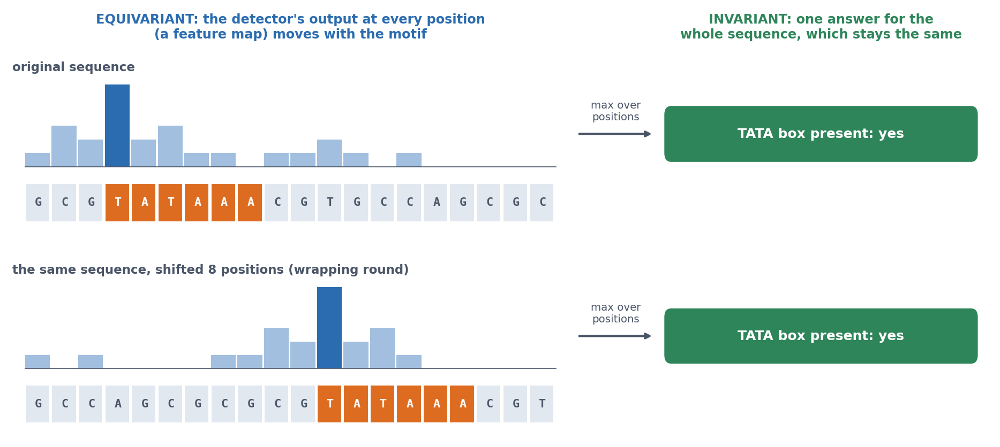
In symbols, with \(T\) the shift and \(f\) the model: equivariance means \(f(T x) = T f(x)\), so shifting the input shifts the output, and invariance means \(f(T x) = f(x)\), so shifting the input changes nothing.
Which of the two we want depends on the question. Per-residue labels, such as whether each residue belongs to a signal peptide (Session 11) or the secondary structure of each residue (Sessions 7 and 9), should be equivariant: if the sequence is shifted, the labels should shift with it. A label for the whole input, such as the cell type in a blood-cell image or the compartment of a protein (the localisation CNN in Section 10.4), should be invariant: a lymphocyte is a lymphocyte wherever it sits in the image.
Convolution is equivariant. If the input shifts, a shared kernel sees the same pattern somewhere else, so its output shifts by the same amount. This translation equivariance comes from weight sharing itself, and it holds even for a random, untrained kernel:
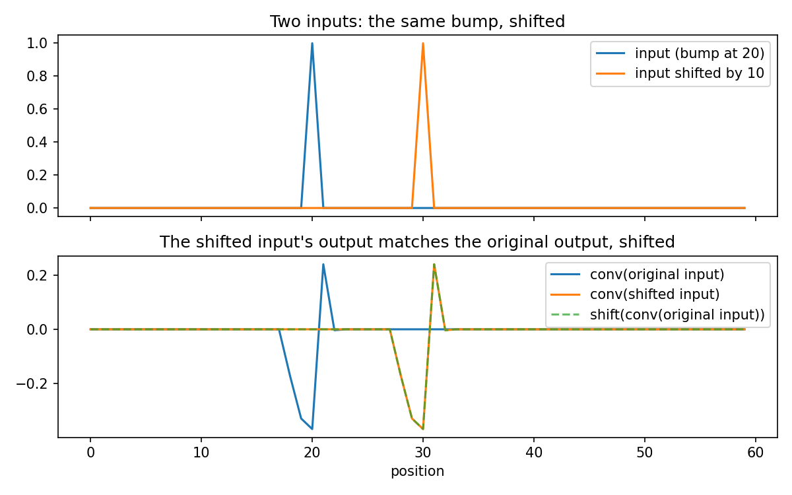
But equivariance is not invariance. The feature is found wherever it is, but where it is found still differs, and whether a classifier’s answer changes depends on what the rest of the network does with that position:
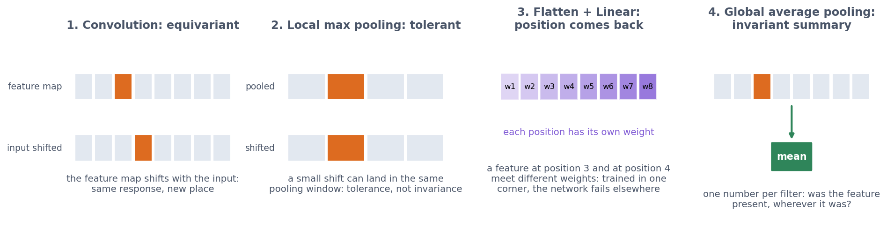
- Local pooling (for example 2 × 2 max pooling) gives some tolerance to small shifts, because a pattern that moves by one pixel often stays in the same pooling window.
- Flatten followed by a dense layer brings absolute position back, because every position of the final feature map gets its own weight. In the lab, CNNs trained on blood cells pasted into one corner reach 0.77-0.86 accuracy on corner cells but only 0.18-0.29 on cells at random positions, close to always guessing the most common class (0.198).
- Global average pooling averages each feature map over all positions, giving one number per filter. The network then asks “was this feature present?”, not “was it present at position 17?”. The result is a position-invariant summary, used by the localisation CNN below.
Rotation is a different matter, because nothing in convolution or pooling handles it.
10.2.4 Stacking convolutions: the receptive field
A single layer sees only the window of its kernel, but stacking layers widens the view. A unit in a second convolutional layer combines several first-layer units, each with its own window, so it depends on a wider stretch of the input, its receptive field.
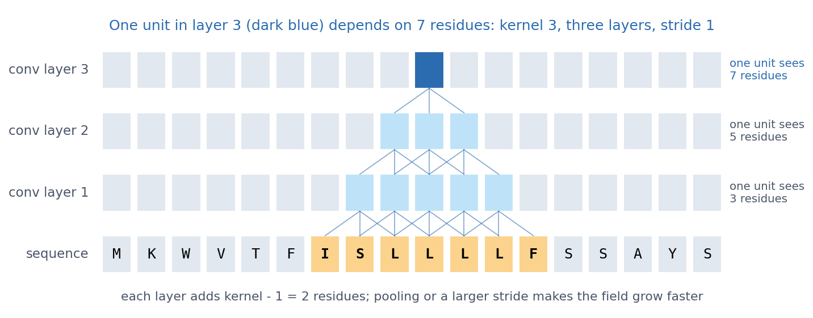
With kernel size k and stride 1, every layer adds k − 1 positions, and pooling and larger strides make the receptive field grow faster. This is how deep CNNs build complex patterns from simple ones: edges, shapes and objects in images, and motifs and then combinations of motifs in DNA and proteins. The second discussion problem asks how wide the window must be for a signal peptide.
10.2.4.1 Further watching
But what is a convolution? (3Blue1Brown): convolution from probability to image blurring, the same sliding weighted sum a CNN learns:
10.2.5 What actually happened: from LeNet to ResNet
The idea behind CNNs is more than 60 years old, but it took until 2012 for it to work at scale. The story shows what a good idea needs before it works.
From the cat’s visual cortex to the Neocognitron. In the late 1950s, David Hubel and Torsten Wiesel recorded single neurons in the visual cortex of cats while showing them simple patterns (Hubel & Wiesel 1962, J. Physiol. 160:106-154; Nobel Prize 1981). Each neuron responded only to a small part of the visual field, its receptive field, and only to one feature there, such as an edge at a particular angle. “Simple cells” responded to an edge at one exact position. “Complex cells” responded to the same edge anywhere within a somewhat larger region. These are the two operations of a CNN: a local feature detector, and a pooling step that tolerates small shifts. In 1980 Kunihiko Fukushima built them into a layered network, the Neocognitron, whose title promised pattern recognition “unaffected by shift in position” (Fukushima 1980, Biol. Cybern. 36:193-202). What it lacked was a good way to learn its weights.
LeNet: backpropagation meets convolution. Yann LeCun and colleagues at Bell Labs supplied it. They trained a convolutional network with backpropagation (Session 9) to read handwritten zip codes on US mail (LeCun et al. 1989, Neural Computation 1:541-551). Its successor, LeNet-5 (LeCun et al. 1998, Proc. IEEE 86:2278-2324), was used by banks to read the amounts on cheques, and by the late 1990s it read a large share of the cheques written in the United States.
The quiet decade. Yet CNNs did not take over. Through the 2000s, computer vision was dominated by hand-crafted features, carefully designed descriptors of edges and corners, fed to support vector machines: classifiers that, like the perceptron of Session 7, separate the classes with a boundary, but choose the one that leaves the widest margin between them. Neural networks were widely considered hard to train and not worth the trouble, and the datasets of the time, with thousands of images, were too small for a network to beat a well-designed feature. Two ingredients were missing: data and compute.
ImageNet: the data. In 2009 Fei-Fei Li’s group published ImageNet (Deng et al. 2009, CVPR), millions of photos labelled by thousands of crowd-workers paid per image. From 2010 an annual challenge asked programs to sort 1.2 million training photos into 1,000 classes, scored by the top-5 error, the fraction of test photos whose true class is not among the program’s five best guesses. The first two winners used hand-crafted features and reached errors of 28% and 26% (Figure 10.5).
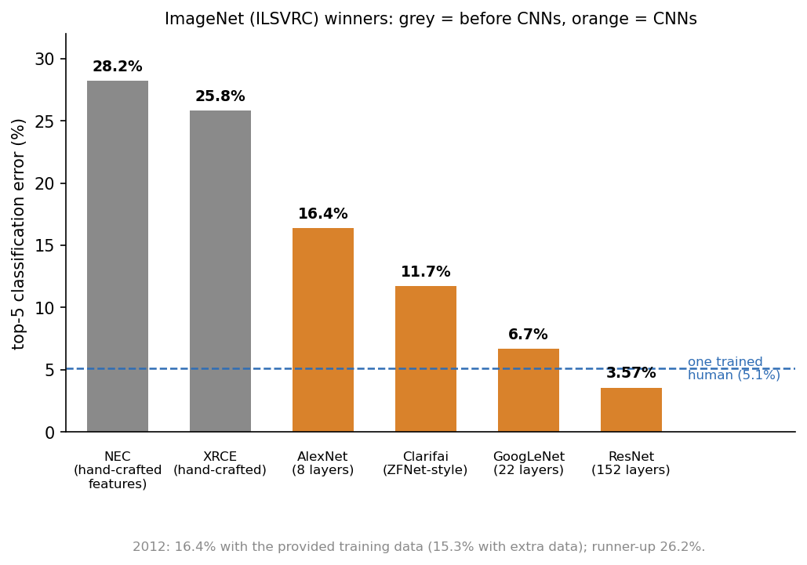
2012: AlexNet. Alex Krizhevsky, a PhD student of Geoffrey Hinton in Toronto, with Ilya Sutskever, entered a CNN with 60 million weights (Krizhevsky, Sutskever & Hinton 2012, NIPS 25). He trained it for five to six days on two gaming graphics cards (GPUs), which do the many multiplications of a convolution in parallel. Its top-5 error was 16.4% on the challenge’s own training data, and 15.3% when extra data was allowed, against 26.2% for the runner-up: the largest jump the challenge ever saw. Little in AlexNet was new on its own: convolution came from LeNet, and the rest was the tools of Session 9 and of this session, ReLU instead of sigmoid, dropout, and data augmentation. What was new was the scale, with ImageNet’s data and the GPUs’ compute. Within two years almost every entry was a CNN, and the deep-learning boom of the following decade started here. (Hinton shared the 2024 Nobel Prize in Physics, with John Hopfield, for the foundations of neural networks.)
Deeper and deeper. The following winners mainly went deeper:
- VGG (Simonyan & Zisserman 2014, arXiv) used stacks of up to 19 layers of small 3 × 3 convolutions. Two stacked 3 × 3 layers see a 5 × 5 region with fewer weights than one 5 × 5 layer (the receptive field above). GoogLeNet (Szegedy et al. 2014, arXiv) won that year with 22 layers.
- But simply adding layers then stopped working. Deeper plain networks had a higher training error than shallower ones. This was not overfitting, since the training error itself was worse. He et al. also ruled out vanishing gradients, which batch normalisation had already dealt with: they measured the gradients and found them healthy. The deeper network was simply harder to optimise. A 56-layer network can always copy a 34-layer one and leave the extra layers doing nothing, so a solution at least as good exists — but plain gradient descent did not find it.
- ResNet (He et al., CVPR 2016) solved it with residual connections. Each block learns a correction to its input and returns \(x + F(x)\). If a block has nothing useful to add, it can learn \(F(x) \approx 0\) and pass its input on unchanged, and the gradient has a short path back through the “+ x”. With 152 layers, ResNet reached a top-5 error of 3.6% in 2015 — an ensemble of several such networks, not one model — below the roughly 5% measured for a trained human annotator on the same task. In the lab, a three-block ResNet beats a three-block VGG network (0.771 against 0.722).
And then CNNs stopped being the answer in images, too. The Vision Transformer (Dosovitskiy et al. 2021, ICLR) cuts an image into patches and treats them as a sequence, with none of convolution’s built-in assumptions, and given enough data it matches and passes CNNs on exactly the tasks CNNs had owned. DINOv2, the strongest model in this session’s lab, is one of these, not a CNN. So the right reading of the ImageNet story is not that convolution won: it is that an assumption is worth a great deal when data is scarce, and worth less as data grows, which is the trade-off this whole session is about. In biology, where labelled data is usually scarce, that trade-off still mostly favours convolution — but CNNs never took over biology either. They sit alongside the sequence models of Session 11 and the structure models of Session 12, each with its own assumption about what matters.
The challenge ended in 2017, because the task was considered solved. The networks it produced did not disappear: pretrained on ImageNet, they are the starting point for transfer learning in biology (Section 10.3), and residual connections are in nearly every deep network since, including the Transformers of Session 11 and AlphaFold (Session 12).
The lesson is that an architecture with the right built-in assumptions (local, shared, stacked detectors) needed data and compute before it could beat hand-crafted features, and residual connections before its depth became trainable.
10.2.5.1 Further reading
- d2l.ai, Modern Convolutional Neural Networks (AlexNet, VGG, ResNet in detail)
- Russakovsky et al. (2015), ImageNet Large Scale Visual Recognition Challenge (including the comparison with human annotators)
- LeCun, Bengio & Hinton (2015), Deep learning, Nature 521:436-444: a review by three of the people in this story
10.3 What assumptions does a CNN build in?
10.3.1 More weights are not better: dense vs. CNN on blood cells
The lab trains four models on the same BloodMNIST blood-cell images, and the result shows that more weights are not better. The best dense network, with one hidden layer of 128 units and 302,216 weights, reaches a validation accuracy of 0.793. A small CNN with two convolution blocks and only 17,640 weights reaches 0.887. The CNN wins with 17 times fewer weights because it does not have to learn locality and weight sharing from the data, since they are built in. This is Session 9’s lesson again, seen from the other side: more weights do not help, but the right assumptions do.
10.3.2 Few labels: transfer learning on cancer histology
Biology rarely has 1.2 million labelled images. Kather et al. (2019, PLoS Med 16:e1002730) cut H&E-stained slides of colorectal cancer into small tiles and labelled each with one of nine tissue types:
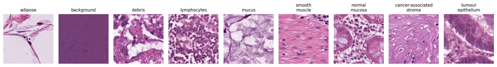
To imitate a small dataset, the notebook pretends that we have only 40 labelled tiles per class for training and 40 for validation, all from the same 86 slides. It tests on 100 tiles per class from 50 other patients:
| Small CNN from scratch (242,697 weights) | Same CNN + data augmentation | Transfer: frozen ImageNet ResNet-18 + new last layer | Transfer: frozen DINOv2 + new last layer | |
|---|---|---|---|---|
| Validation accuracy | 0.861 | 0.855 | 0.856 | 0.917 |
| Test accuracy (new patients) | 0.745 | 0.792 | 0.780 | 0.832 |
| Test accuracy, range over three seeds | 0.721-0.786 | 0.769-0.821 | — | — |
- From scratch, the CNN memorises its 360 training tiles. With so little data, the random seed alone moves its test accuracy by more than 6 percentage points.
- Data augmentation (below) helps on average, though not in every seed.
- Transfer learning is what the field actually did. The layers of a network trained on millions of images are kept frozen, as a feature extractor, and only a new last layer is trained. ResNet-18 never saw a tissue tile, yet its features match the augmented CNN.
- Validation from the same slides, test from new patients. Every model scores clearly higher on validation than on test, because the validation tiles share patients, staining runs and scanner with the training tiles. This is Session 8’s homology trap again. When examples come in groups (proteins in families, tiles in patients), the honest split is by group.
A network trained on a huge image collection has learned features that are useful for a new task with few labels. DINOv2 (Oquab et al. 2023, arXiv:2304.07193) was trained on 142 million images without any labels (self-supervised), and its features still work best on tissue it has never seen. Such reusable models are called foundation models, and Session 11 shows the same recipe for proteins.
10.3.3 Which transformations should not matter?
A CNN handles small shifts through its architecture, but everything else it must learn from data. Data augmentation is how we tell it what should not matter: in every epoch, the network sees a slightly changed copy of every training image, with the same label. Augmentation should therefore encode only transformations that preserve the label, which is a statement about the biology, not about the network. A tissue section or a blood cell on a slide has no “up”, so rotations and mirror images are valid, and small colour changes imitate staining differences between labs. A handwritten 6 rotated by 180° becomes a 9, however, so the same augmentation would be wrong for digits.
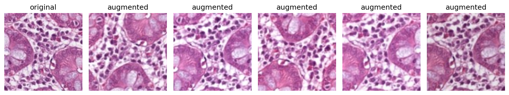
Does the network need augmentation? The notebook counts how often the predicted class changes when the same test tile is shifted, rotated or mirrored. An invariant classifier would change none:
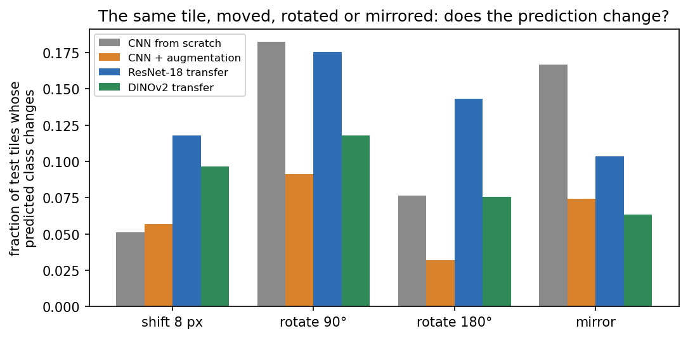
Without augmentation, an 8-pixel shift changes the CNN’s answer for 5% of tiles, but a 90° rotation changes it for 18% and a mirror image for 17%. Training with rotated and mirrored copies roughly halves the last two (9% and 7%), so the network has learned from data a symmetry that the architecture could not give it. The pretrained networks are not rotation-invariant either, since their training photos are almost always upright. This is why histology pipelines augment with all rotations and flips, and why rotation-equivariant CNNs were developed for pathology (Veeling et al. 2018, MICCAI).
10.4 CNNs on biological sequences
10.4.1 Filters become motifs
A first-layer filter on one-hot DNA has shape 4 × k, with one weight per base per position. Sliding it along the sequence is exactly how a position weight matrix scores a sequence (Session 5), except that the matrix is learned instead of counted from aligned sites. Two examples show this:
- DeepBind (Alipanahi et al. 2015, Nat Biotechnol 33:831) trained CNNs on protein-DNA and protein-RNA binding data, and its learned specificities could be “readily visualized as … position weight matrices”.
- DeepSEA (Zhou & Troyanskaya 2015, Nat Methods 12:931) read 1,000 bp of sequence and predicted 919 chromatin features at once. Comparing its predictions for the reference and a mutated sequence scores the effect of a non-coding variant.
Later networks found that many of their filters matched known transcription-factor motifs, rediscovered from sequence alone. Longer-range models needed larger receptive fields and, eventually, Transformers (Session 11).
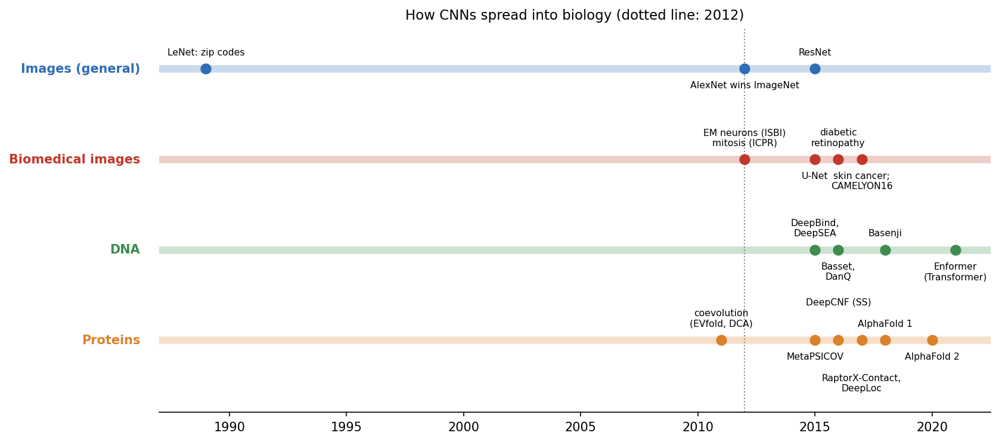
The spread was as fast in biomedical imaging. U-Net (Ronneberger et al. 2015, arXiv:1505.04597) became the standard for segmenting cells and tissues, and ImageNet-pretrained CNNs fine-tuned on retinal, skin or pathology images reached expert level on the tasks they were trained for (e.g. Esteva et al. 2017, Nature 542:115).
10.4.2 Proteins: our own CNN finds the signal peptide
The same idea works on protein sequences. The localisation network of Sessions 8-9 becomes a 1D CNN with two convolutional layers of 7-residue filters, followed by global average pooling and a linear layer to the five classes. It is trained and evaluated exactly as in Session 9, on the same homology-aware split:
| Metric | Session 9: flat network | Session 9: logistic regression | Session 10: 1D CNN |
|---|---|---|---|
| Weights | 192,389 | 15,005 | 19,237 |
| Test accuracy | 0.514 | 0.569 | 0.587 |
| F1 | 0.493 | — | 0.586 |
| MCC | 0.394 | 0.461 | 0.484 |
| AUROC | 0.831 | 0.849 | 0.869 |
The CNN beats the flat network on every metric with a tenth of the weights. It does so because it builds in an assumption instead of learning 192,389 free weights from 486 proteins: the same local pattern can be detected with the same weights wherever it occurs. Its margin over logistic regression, in contrast, is within the noise of a 109-protein test set (retraining from other random initial weights gave 0.569-0.587). The robust finding is therefore the gap to the flat network.
What did it learn? Each first-layer filter is a 20 × 7 matrix, that is, a learned PWM over a 7-residue window. The five filters most selective for secreted proteins correlate with the Kyte-Doolittle hydrophobicity scale at r = 0.70-0.83 (all 32 filters: mean r = 0.12). They fire at a median residue position of 11-12 in secreted proteins, against 62-76 elsewhere:
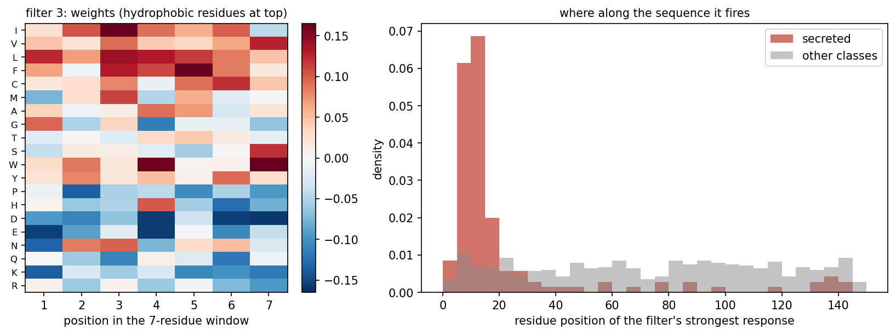
Nobody told the network about signal peptides, yet it found a detector for their hydrophobic core on its own, just as the DNA filters rediscovered transcription-factor motifs. Each unit of its second layer sees 20 residues (7 in layer 1, then 2× pooling and another 7-wide kernel), about the length of a signal peptide.
But position matters in proteins. Convolution assumes that a pattern can be detected the same way everywhere, not that it means the same thing everywhere. A hydrophobic stretch at the N-terminus is a signal peptide, whereas in the middle of a protein it may be a transmembrane helix, and some targeting signals sit specifically at the C-terminus. Global average pooling throws away where the filter fired, so our network only knows that a hydrophobic stretch occurred somewhere. If signal peptides matter at the N-terminus, what has the network lost, and how could you give it back? Later layers, positional features or position-aware pooling are options. Session 11’s models, which read the sequence in order and encode position explicitly, return to signal peptides in depth.
The real tool, DeepLoc (Almagro Armenteros et al. 2017, Bioinformatics 33:3387), puts convolutions first and a bidirectional LSTM with attention (Session 11) after them, so that the order-aware part restores position.
10.4.2.1 Further reading
- Zhou & Troyanskaya (2015), Predicting effects of noncoding variants with deep learning-based sequence model
- Kelley, Snoek & Rinn (2016), Basset
- Wikipedia, U-Net
10.5 Beyond sequences: a contact map is an image
Convolution is not limited to sequences and photographs. It also works on the contact map of a protein, which you met in Session 6 (section “A structure as a matrix: distance and contact maps”).
What a contact map is. A structure is a list of coordinates in 3D. A contact map turns it into a 2D picture that only says which residues touch. For a protein of \(L\) residues it is an \(L \times L\) grid: the pixel in row \(i\) and column \(j\) is black (1) if residues \(i\) and \(j\) are close in space, and white (0) if not. “Close” needs a definition, and the usual one is that the two residues’ Cβ atoms (Cα for glycine, which has no Cβ) are within 8 Å, about the distance at which side chains can touch. Three things follow from this definition:
- The map is symmetric: if \(i\) touches \(j\), then \(j\) touches \(i\), so every contact appears twice, mirrored in the diagonal.
- The diagonal is always black, since every residue is close to itself and to its neighbours in the chain. Contacts near the diagonal are local: the two residues are near each other in the sequence as well as in space.
- Contacts far from the diagonal are the interesting ones. They join residues that are far apart in the sequence but brought together by the fold, and they are what makes a protein’s 3D structure what it is.
Like the distance map it is made from, a contact map does not change when the protein is rotated or moved (Session 6): it is invariant to those transformations, in the sense of Section 10.2. Figure 10.11 shows how pairs of residues in the structure of the β chain of haemoglobin (PDB 4HHB) become pixels of its contact map:
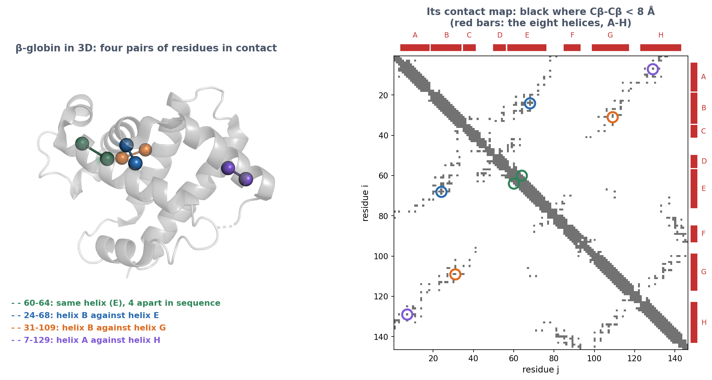
Contacts form local patterns, as helices give bands and strand pairs give lines along or across the diagonal. Once a protein is an \(L \times L\) map, 2D convolutions are therefore a natural way to predict it. From 2016, deep residual CNNs that predict contact and distance maps transformed structure prediction, and Session 12 tells that story. The third discussion problem asks you to read fold classes from contact maps.
10.6 Check your understanding
10.7 The course notebook
notebooks/session10-cnns-in-code.ipynb computes every number on this page:
- the equivariance demonstration; cancer histology from scratch, with augmentation and with transfer learning (ResNet-18, DINOv2); the shift/rotation test;
- the localisation 1D CNN on the homology-aware split, and its first-layer filters;
- the contact map of β-globin (PDB 4HHB).
The first part of the notebook trains a small CNN six times for 100 epochs, so use a GPU runtime on Colab (Runtime → Change runtime type), or lower EPOCHS on a CPU. Open it in Google Colab via the badge at the top of the notebook page.
10.8 The lab
Full lab, on blood-cell images (BloodMNIST, as in the Session 8 and 9 labs). The lab is adapted from the previous course’s “Neural Networks” lab. Work through notebooks/session10-lab.ipynb, replacing every todo(...) call with your own code:
- count the weights of a dense and a convolutional layer, then of whole models, and see why adding a convolutional layer can make the whole model smaller (the next dense layer receives a smaller feature map);
- train four models side by side, two dense networks of 23,000 and 302,000 weights, a one-layer convolutional network and a small CNN, and see that the CNN, with 17,640 weights, beats them all;
- choose the number of filters yourself, by trying a few values and watching the validation accuracy, and then measure the model you chose once on the test set, which has been untouched since the start;
- find out how many unpadded 5×5 convolutions fit on a 28×28 image;
- build a VGG block, and test it on cells placed at positions it never saw during training, before and after training on randomly placed cells, to see that equivariance is not invariance.
Two optional extras, which are not part of the quiz, follow if you have time. In the first you build a ResNet block with a skip connection and compare it with VGG. In the second you rotate and mirror the cells and measure what augmentation buys you.
10.8.1 Submitting this lab
This lab is administered through Canvas, not through this book. See the course’s Canvas page for the current quiz, the deadline and how to submit.
10.9 What’s next
CNNs are excellent when local patterns matter, but they see only as far as their receptive field, and global pooling forgets where things were. Session 11 turns to models that read a whole sequence in order and relate distant positions: recurrent networks and LSTMs, the history of language models, and the Transformer. SignalP, from its 1995 feed-forward network to its 2022 protein language model, follows that whole history.